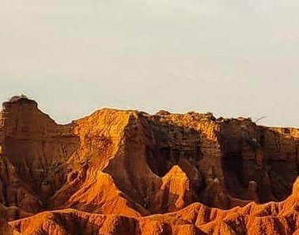
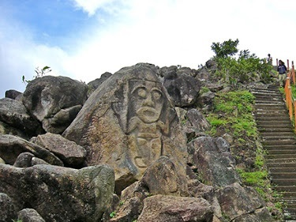
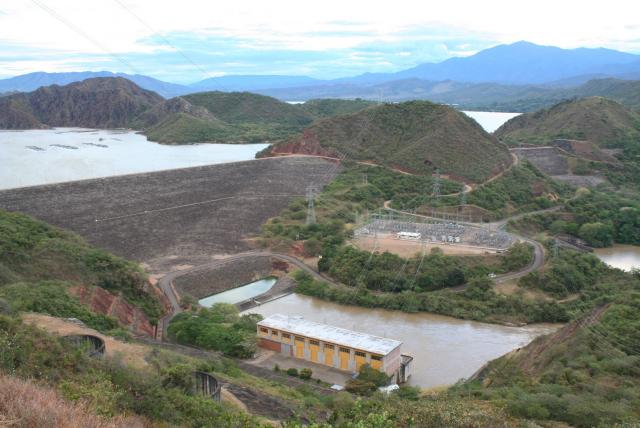

Huila es un departamento en el sur de Colombia, atravesado por la cordillera de los Andes y hogar del imponente volcán Nevado del Huila. El Parque Arqueológico de San Agustín, ubicado hacia el sur, cuenta con cientos de monumentos y esculturas precolombinas. Además, el río Magdalena atraviesa el centro de Huila. En el norte de la ciudad se ubica el pueblo de Villavieja, que está rodeado por el inmenso desierto de Tatacoa. En el Observatorio Astronómico se pueden observar las estrellas
Huila es uno de los treinta y dos departamentos que junto con Bogotá, Distrito Capital, forman la República de Colombia. Su capital y ciudad más poblada es Neiva. Está ubicado al suroeste del país, en la región andina, limitando al norte con Tolima y Cundinamarca, al este con Meta, al sur con Caquetá y al oeste con Cauca. Con 19 890 km², es el séptimo departamento menos extenso, por delante de Sucre, Caldas, Risaralda, Atlántico, Quindío y San Andrés y Providencia.
Las atracciones más populares para visitar en Departamento de Huila son: Desierto de la Tatacoa, Parque San Agustin,Represa de Betania.
  